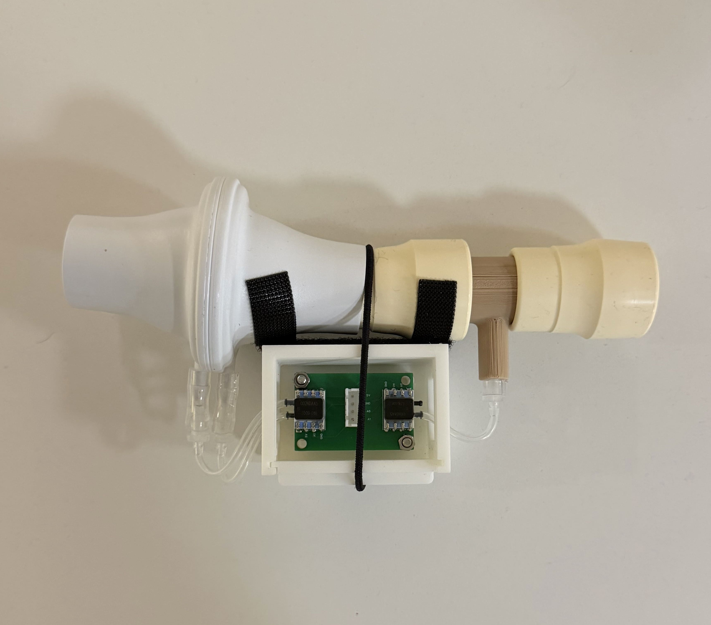
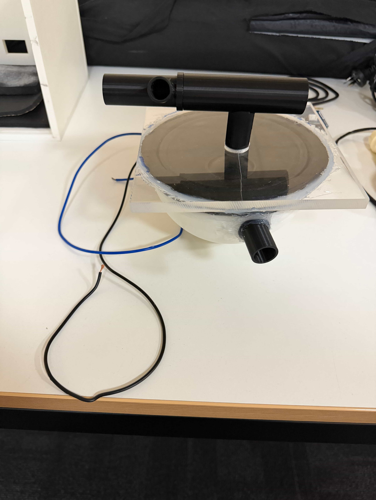

FIG 2.1


Forced Oscillation Respiratory Sensor
A device that measures lung impedance during non-invasive ventilation, to help clinicians set ventilator pressure for COPD patients. I led the hardware build and delivered the first working prototype in the project’s history.
420 Hz
phase-locked dual sampling
0 DRC
errors, 26 × 40 mm board
Airtight
leak-tested before handover
Full spec
My roleTeam lead · PCB design · firmware · SolidWorks CAD · sensor selection · Flask dashboard
SensorsDual Honeywell HSC: airway pressure (±10 inH₂O) and flow (±2 inH₂O), analog
PCB2-layer FR-4, 26 × 40 mm · JST-XH connector · 0 DRC errors · made by JLCPCB
FirmwareArduino Uno R4 · hardware-timer ISR · phase-locked DAC + dual ADC at 420 Hz
Key callRejected an on-board I²C ADC because sequential reads would corrupt the phase measurement. Simultaneous analog sampling keeps both channels in step.
QualitySealed and leak-tested the full pneumatic path, and documented test results and limits for handover.